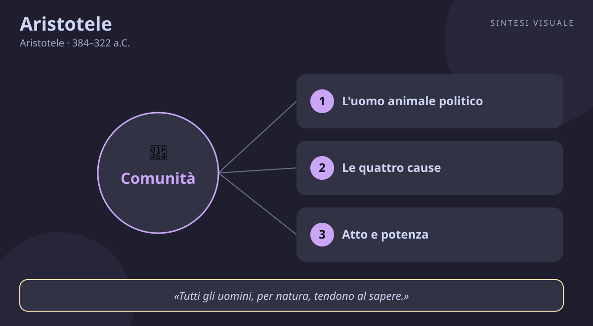

Aristotele
Aristotele · 384–322 a.C.
«L'uomo è per natura un animale politico»
- Animale politico
- Giusto mezzo
- Quattro cause
- Atto e potenza
💬La massima
«L'uomo è per natura un animale politico.»
— Aristotele, Politica, libro I, cap. 2 (1253a2-3). In greco: ànthropos physei politikòn zôon.
Spiegazione. In italiano suona quasi ovvia, ma in greco è una bomba filosofica. Zôon significa «essere vivente, animale»; politikòn non vuol dire «appassionato di partiti», ma «fatto per vivere nella pòlis», la città-comunità. Aristotele non sta dicendo che all'uomo piace stare in compagnia: sta dicendo che fuori dalla comunità l'uomo non diventa nemmeno pienamente uomo. Come un occhio staccato dal corpo non vede più nulla — è occhio solo di nome — così un essere umano isolato resta uomo solo di nome. La città, per Aristotele, non è un'invenzione artificiale per difendersi dai nemici: è il luogo naturale in cui la nostra umanità si compie, perché solo lì possiamo esercitare ciò che ci distingue dagli altri animali, la parola razionale (lògos), discutendo insieme di ciò che è giusto e ingiusto, utile e dannoso.
Il punto sottile. Subito dopo, Aristotele precisa la gerarchia della natura: chi non può vivere in comunità, o non ne ha bisogno perché basta a se stesso, «o è una bestia o è un dio». Non c'è via di mezzo: o cadi sotto l'umano o sei sopra l'umano. Noi stiamo nel mezzo, e il mezzo è la piazza, l'assemblea, la famiglia, il lavoro condiviso — la vita in comune.
Perché conta oggi. Viviamo nell'epoca dell'individualismo programmato: cuffiette nelle orecchie, cena con lo smartphone, lavoro da remoto in pigiama, vicini di casa di cui non sappiamo il nome. Aristotele ci ricorda che l'autosufficienza totale non è un traguardo ma una mutilazione. L'isolamento prolungato non ci rende liberi: ci rende meno umani, perché la ragione, il linguaggio e il carattere si formano solo nell'attrito con gli altri.
👤Biografia
Aristotele nacque nel 384 a.C. a Stagira, una cittadina greca della Calcidica, nel nord dell'Egeo. Il padre Nicomaco era il medico personale del re di Macedonia: il ragazzo crebbe così tra bende e bisturi, e forse da lì gli venne l'ossessione per l'osservazione dei viventi — da adulto dissezionerà di tutto, dalle seppie ai pulcini nell'uovo.
Vent'anni con Platone. A diciassette anni fu mandato ad Atene, all'Accademia di Platone, e ci restò circa vent'anni, fino alla morte del maestro nel 347 a.C. Fu il suo allievo più geniale e anche il più ribelle: «Amico è Platone — dirà — ma più amica è la verità». Platone lo chiamava «la mente» della scuola, ma gli rimproverava di vestirsi troppo elegante e di tenere troppe scarpe.
Gli anni erranti. Morto Platone, e con Atene diventata ostile ai filomacedoni, Aristotele emigrò: prima ad Asso, ospite del tiranno Ermia — di cui sposerà la nipote adottiva, Pizia — poi a Mitilene, a studiare biologia marina nella laguna. Nel 343 o 342 a.C. il re Filippo II di Macedonia lo chiamò come precettore del figlio tredicenne: quel ragazzo era Alessandro Magno. Per alcuni anni, nella quiete di Mieza, il più grande filosofo e il più grande conquistatore della storia fecero lezione insieme — e si racconta che Alessandro portasse con sé in Asia un'edizione dell'Iliade annotata dal maestro.
Il Liceo. Nel 335 a.C. Aristotele tornò ad Atene e fondò una scuola propria, il Liceo, con annesso un parco dove si passeggiava discutendo — da qui il nome dei suoi seguaci, i peripatetici («quelli che passeggiano»). Mangiava, dormiva e catalogava: scrisse — o meglio, dettò appunti di lezione — su logica, fisica, biologia, metafisica, etica, politica, poetica e retorica. Un intero sistema del mondo.
La fuga. Nel 323 a.C. Alessandro morì a Babilonia e ad Atene esplose l'odio contro tutto ciò che sapeva di Macedonia. Accusato di empietà con un pretesto politico, Aristotele scelse di non fare la fine di Socrate: «Non permetterò ad Atene di macchiarsi due volte di un delitto contro la filosofia». Fuggì a Calcide, nell'isola di Eubea, dove morì l'anno dopo, nel 322 a.C., a sessantadue anni, per un disturbo allo stomaco.
Il carattere. Metodico fino all'ossessione, curioso di tutto, polemico con garbo: confutava i predecessori uno per uno, ma sempre riconoscendo loro di aver visto «un pezzo di verità». Sposato due volte, padre di un figlio (Nicomaco, a cui è dedicata l'Etica Nicomachea) e di una figlia, collezionista della prima grande biblioteca privata della storia.
📌Sintesi del pensiero
Aristotele vuole spiegare il mondo intero con la ragione osservando come le cose sono fatte e come funzionano: ogni essere tende a realizzare la propria forma perfetta, e l'uomo realizza la sua vivendo bene — con virtù, amici e concittadini — nella comunità politica.
- Metodo: osservare i fatti e classificarli, poi risalire alle cause: inventa la logica (il sillogismo) come strumento di ogni scienza.
- Etica: la felicità (eudaimonia) è vivere secondo virtù, e la virtù è il giusto mezzo tra due eccessi, allenato con l'abitudine.
- Senso politico: l'uomo si compie solo nella pòlis, discutendo con la parola razionale di ciò che è giusto; la comunità è naturale, non artificiale.
🏛️I temi fondamentali
- L'uomo animale politico. È il cuore della massima di oggi: la comunità non è una gabbia ma la nostra casa naturale. Solo nella pòlis l'uomo parla, giudica, delibera e diventa responsabile. Chi disprezza la vita pubblica — il qualunquista che «tanto sono tutti uguali» — per Aristotele non è un saggio distaccato ma un cittadino dimezzato, che rinuncia proprio alla facoltà che lo rende umano.
- Le quattro cause. Per capire davvero una cosa bisogna rispondere a quattro «perché»: di che cosa è fatta (causa materiale, il marmo), chi l'ha fatta (causa efficiente, lo scultore), che forma ha (causa formale, la statua di un dio) e a che scopo esiste (causa finale, onorare il dio). La modernità ha tenuto solo le prime due e deriso le altre; ma quando chiediamo «che senso ha questo lavoro?», stiamo cercando proprio la causa finale aristotelica.
- Atto e potenza. Una ghianda è in potenza una quercia; la quercia è in atto ciò che la ghianda prometteva. Tutto in natura è un passaggio dalla potenza all'atto, e il motore ultimo che muove ogni cosa senza muoversi — il «motore immobile» — è pensiero puro che pensa se stesso. I teologi medievali ci vedranno la descrizione filosofica di Dio.
- La virtù come giusto mezzo. Il coraggio sta in mezzo tra la viltà (troppo poco) e la temerarietà (troppo); la generosità tra avarizia e prodigalità. Ma attenzione: il «mezzo» non è la mediocrità, è l'eccellenza calibrata sulla situazione — come il timoniere che corregge la rotta a seconda del vento. E non si impara dai libri: si diventa giusti compiendo azioni giuste, come si diventa suonatori suonando.
- La tragedia purifica (catarsi). Nella Poetica Aristotele osserva che assistere a una tragedia suscita pietà e terrore e poi ce ne libera: piangere per Edipo ci restituisce più leggeri. È la prima grande teoria dell'effetto delle storie su chi le ascolta — e spiega perché ancora oggi usciamo dal cinema commossi e insieme sollevati.
📚Le opere principali
- Politica (IV sec. a.C., raccolta di lezioni). Da dove viene la massima di oggi. Studia le costituzioni di decine di città greche e conclude che la comunità politica è naturale e che il suo fine è la vita buona, non la mera sopravvivenza. Fondò così la filosofia politica occidentale.
- Etica Nicomachea (IV sec. a.C., appunti di lezione dedicati al figlio). Il capolavoro morale: la felicità è l'attività dell'anima secondo virtù, la virtù è il giusto mezzo allenato dall'abitudine, e l'amicizia vera è indispensabile alla vita buona. Si legge ancora come un manuale di vita, non come un reperto.
- Metafisica (titolo dato dagli editori: «i libri dopo la Fisica»). Lo studio «dell'essere in quanto essere»: atto e potenza, le quattro cause, il motore immobile. Il suo incipit — «tutti gli uomini per natura tendono al sapere» — è tra le frasi più citate della storia.
- Poetica e Retorica (IV sec. a.C.). La prima fonda la teoria della letteratura (tragedia, catarsi, intreccio); la seconda analizza come si persuade un uditorio — emozioni, carattere dell'oratore, argomenti — ed è ancora oggi il manuale occulto di avvocati, politici e venditori.
💬Massime celebri
«Tutti gli uomini, per natura, tendono al sapere.» — Metafisica, I, 1 (980a21), l'incipit dell'opera: la curiosità non è un vezzo ma l'istinto più umano, e vale la pena nutrirla a ogni età.
«Gli uomini hanno cominciato a filosofare, ora come in origine, a causa della meraviglia.» — Metafisica, I, 2 (982b12-14): la filosofia nasce dallo stupore davanti alle cose semplici — la luna, le ombre, un seme — non dai manuali. Chi smette di meravigliarsi smette di pensare.
«La virtù è una medietà (un giusto mezzo) tra due vizi, uno per eccesso e uno per difetto.» — Etica Nicomachea, II, 6: la bussola pratica di Aristotele — davanti a ogni scelta chiediti quale sia il troppo e quale il troppo poco, e punta nel mezzo.
⌛Contesto storico
- Aristotele visse nel IV secolo a.C., il secolo in cui la Grecia classica cambiò padrone. Nacque nel 384 a.C., quando Atene era già l'ombra della potenza dell'età di Pericle: sconfitta da Sparta nel 404 a.C., attraversata da guerre intestine, con la democrazia restaurata ma nervosa — la stessa che aveva condannato Socrate nel 399 a.C., quando Aristotele aveva quindici anni.
- Al nord cresceva una potenza nuova: la Macedonia di Filippo II, un regno semibarbaro agli occhi dei greci colti, ma con un esercito rivoluzionario — la falange compatta e la cavalleria — e un re ambiziosissimo. Nel 338 a.C., con la battaglia di Cheronea, Filippo sconfisse Atene e Tebe e mise la Grecia sotto tutela macedone. La pòlis indipendente, protagonista di due secoli di storia, diventava un ricordo: il futuro apparteneva ai grandi regni.
- Suo figlio Alessandro, il ragazzo educato da Aristotele, dal 334 a.C. travolse l'impero persiano in una decina d'anni, fondò Alessandria d'Egitto e arrivò fino all'Indo, spargendo città e cultura greca dall'Egitto all'Asia centrale. Aristotele osservò l'impresa da Atene con sentimenti misti: il suo pensiero restava legato alla piccola comunità della pòlis, mentre il mondo diventava grande ed ellenistico.
- La società in cui si mosse era quella delle élite colte itineranti: scuole filosofiche rivali (Accademia, poi Liceo, Cinici, Cirenaici), simposi, biblioteche nascenti, teatri affollati per le commedie di Menandro. Le donne e gli schiavi restavano esclusi dalla cittadinanza — un limite che Aristotele, pur geniale, condivise e giustificò, e che oggi dobbiamo riconoscere come la macchia del suo pensiero politico.
- Da chi è stato influenzato il padre medico e l'osservazione della natura; Socrate, con l'idea che la virtù si possa indagare razionalmente; Platone, maestro per vent'anni e avversario per sempre — contro le Idee separate dal mondo, Aristotele riporta le forme dentro le cose; i naturalisti presocratici e i medici di Cos, di cui ereditò il metodo empirico.
- A chi ha trasmesso è il filosofo più influente di sempre dopo Platone. Teofrasto continuò il Liceo; gli arabi Avicenna e Averroè lo fecero maestro del Medioevo islamico; Tommaso d'Aquino lo battezzò «il Filosofo» per eccellenza, fondendo la sua metafisica con il cristianesimo. La scienza moderna (Galileo, Bacone) dovette prima rovesciarlo per nascere; l'etica contemporanea lo ha riscoperto con Anscombe e MacIntyre, e Hannah Arendt riprese da lui l'idea che agire e parlare insieme sia l'essenza della vita umana.
🌊L'eredità
- Aristotele non ebbe un erede: ebbe una civiltà. Per mille anni, dal mondo islamico alla Scolastica cristiana, filosofare significò commentare Aristotele: Averroè lo chiamava la perfezione della ragione umana, e nelle università medievali le sue opere erano il programma d'esame obbligatorio di ogni studente.
- Quando la scienza moderna nacque, dovette uccidere simbolicamente il padre: Galileo confutò la sua fisica dei gravi, Bacone il suo metodo sillogistico. Ma lo uccise solo a metà — la logica, la biologia classificatoria e il vocabolario stesso della scienza (materia, forma, energia, causa) restano aristotelici.
- Nel Novecento è tornato da protagonista: l'etica delle virtù (Anscombe, MacIntyre) riparte dal giusto mezzo contro l'etica dei calcoli utilitaristi; la filosofia politica comunitarista cita l'animale politico contro l'individuo astratto del liberalismo; e ogni volta che un insegnante dice «si impara facendo», ripete Aristotele senza saperlo.
🌍Esempi di oggi
- Il vicino di casa sconosciuto. Vivi da tre anni nello stesso palazzo e non sai il nome di chi abita di fronte: ci si incrocia con gli occhi sul telefono. Il disagio vago che provi rientrando non è nostalgia romantica: è l'animale politico che protesta. Bastano un «buongiorno» e due chiacchiere sulle scale per scoprire che la pòlis comincia dal pianerottolo.
- La riunione di condominio disertata. Nessuno va all'assemblea, poi tutti si lamentano dell'amministratore e delle spese. Aristotele sorriderebbe amaro: chi si ritira dalla deliberazione comune non diventa più libero, diventa suddito delle decisioni altrui. Partecipare alle piccole assemblee — condominio, scuola, quartiere — è l'esercizio base del muscolo politico.
- Il volontario del sabato mattina. Chi dedica due ore alla squadra di quartiere, alla mensa o alla festa del paese torna a casa stanco ma stranamente contento. Non è altruismo misterioso: è la causa finale in azione — l'uomo si realizza contribuendo al bene comune, e la felicità aristotelica (eudaimonia) è proprio questa: attività riuscita insieme agli altri, non piacere consumato da soli.
📄Aristotele (384–322 a.C.), il maestro che classificò il mondo
Ritratto (busto in marmo, copia romana da originale greco, Palazzo Altemps — pubblico dominio):
🧠Quiz
Rispondi in chat con la lettera di ogni risposta, es. 1B 2A 3C 4D 5B.
1 Cosa significa davvero, per Aristotele, che l'uomo è «per natura un animale politico»?
2 Perché Aristotele lasciò Atene nel 323 a.C.?
3 Cosa sono, nella dottrina aristotelica, «atto» e «potenza»?
4 Cos'è la virtù come «giusto mezzo» secondo l'Etica Nicomachea?
5 Chi fu l'allievo più famoso di Aristotele, educato da lui a Mieza?
✅Soluzioni — tocca per vedere
- B) Che l'uomo si realizza pienamente solo vivendo nella comunità. Non è un invito a fare politica di mestiere né semplice socievolezza: la pòlis è il luogo naturale in cui parola razionale e giudizio sul giusto rendono l'uomo pienamente umano. Fuori dalla comunità, dice Aristotele, si è bestie o dèi.
- B) Perché accusato di empietà, volle evitare un secondo delitto contro la filosofia. Morto Alessandro, Atene perseguitò i filomacedoni; Aristotele fuggì a Calcide dicendo che non avrebbe permesso alla città di macchiarsi due volte. Morì lì nel 322 a.C.
- B) Potenza è ciò che una cosa può diventare, atto la sua realizzazione. La ghianda è quercia in potenza; la quercia adulta è quella stessa natura giunta in atto. È la chiave di tutta la fisica e la metafisica aristoteliche, fino al motore immobile come atto puro.
- C) L'eccellenza calibrata tra eccesso e difetto, allenata con l'abitudine. Il mezzo non è mediocrità ma precisione — il timoniere che corregge la rotta secondo il vento. E si diventa virtuosi praticando la virtù, come si diventa suonatori suonando.
- B) Alessandro Magno. Filippo II affidò ad Aristotele il figlio tredicenne; per alcuni anni maestro e futuro conquistatore studiarono insieme a Mieza. (Teofrasto fu invece il successore alla guida del Liceo; Platone il maestro, non l'allievo.)
🔁Ripasso
Animale politico ≠ appassionato di politica. Politikòn viene da pòlis (comunità), non da «partito»: riguarda il vivere insieme, deliberare e parlare — dal pianerottolo al parlamento. Anche chi «odia la politica» resta un animale politico: semplicemente uno che ha smesso di allenare la sua facoltà più umana.
Giusto mezzo ≠ mediocrità. Il mezzo aristotelico è il punto di eccellenza, non il compromesso pigro: richiede giudizio, esperienza e abitudine. Il coraggioso non è «moderatamente paurose» — è eccellente nel dosare paura e audacia secondo la situazione.
Atto e potenza ≠ passato e futuro. Non sono tempi verbali ma modi di essere: la potenza è già reale (la ghianda contiene davvero la quercia), l'atto è il suo compimento. Aristotele spiega così il cambiamento senza ricorrere al «tutto scorre» di Eraclito né al mondo immobile di Parmenide.
Domani un nuovo filosofo. Se rispondi al quiz, ti darò il punteggio e un ripasso mirato solo su ciò che hai sbagliato.
🖼️In un colpo d’occhio

Tocca l’immagine per ingrandirla.